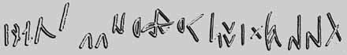

|  | Древнетюркские руны (VII в. н.э.) |
"Древние тюрки"
 От
автора
От
автора - Введение
 Часть первая. Великий
тюркский каганат
Часть первая. Великий
тюркский каганат 
- Глава I. Накануне
(420-546 гг.)
- Глава II. Предки
- Глава III. Создание великой державы рода Ашина
(545-581 гг.)
- Глава IV. Шелк
и караванный путь
- Глава V. Внутри
каганата
- Глава VI. Тюркюты
у себя дома
- Глава VII. Религия тюркютов
- Глава VIII. Мнения и сомнения
- Глава IX. Великая
распря (581-593 гг.)
- Глава X. Поход
на Иран
- Глава XI. Ашина
и Суй
- Глава XII. Западный каганат
- Глава XIII. Рождение империи Тан
- Глава XIV. Восточный каганат
- Глава XV. Мировая
война в VII в.
- Глава XVI. Десять стрел
- Глава XVII. Табгачский хан
- Глава XVIII. Конец тюркютов
- Часть вторая. Голубые тюрки и
уйгуры, или эпоха Второго каганата
- Глава XIX. Агония Западного каганата и тибетская
экспансия
- Глава XX. Преображение
народа
- Глава XXI. Восстание Кутлуга
- Глава XXII. Воссозданный каганат
- Глава XXIII. Потрясение
- Глава XXIV. Голубые тюрки о себе
- Глава XXV. Тибетцы и тюргеши
- Глава XXVI. Каганат и Империя
- Глава XXVII. Создание Уйгурского каганата
- Глава XXVIII. Восстание Ань Лушаня
- Глава XXIX. Тибет VIII в.
- Глава XXX. Уйгурия VIII-IX вв.
- ПРИЛОЖЕНИЯ
- Синхронистическая
таблица
- Генеалогические
таблицы
- Ономастическая
таблица
- Список
сокращений
- Использованная
литература
- Указатель
имен
- Указатель
топонимов
- Указатель
этнонимов
- Карты
- Ссылки на
дополнительные материалы
Подготовка электронного текста книги завершена в мае 1999 года.